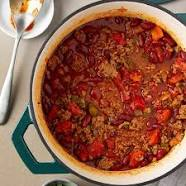

The Rainbow Roll!

How to make it!
This sushi roll encompasses some the most beloved fish types in one roll! It can use whatever,
your favorite fish is, but typically it's wrapped with rice,Nori,Salmon, Yellowtail and Tuna, with crabstick and avocado inside.
Ingredients
- Rice
- Rice Wine Vinegar
- Avocado
- Crabstick
- Nori
- Sushi Grade Salmon, Tuna, and Yellowtail or whatever you prefer!
Steps
- Make sticky rice by adding 1:1 rice vinegar to fresh white rice and mix, ny hand
- Prepare chosen fish, avocado, and crabstick.
- Place ingredients on sushi roll matt and roll together.
- Unroll matt, and cut sushi into even bite sized pieces.
Chili con Carne!

This chili recipe is simple yet delicious whether you use storebought salsas and other ingriedients or fresh ones.
However fresh 80/20 meat is a must no hormel here!
Ingredients
- 80/20 Ground beef
- Chili Powder
- BBQ Sauce
- Brown Sugar
- Pork and Beans
- Fresh or store bought Salsa
- Cumin powder
- Diced Tomatos in a can or fresh
- Raw white onions optional Garnish
- Cheddar Cheese optional Garnish
- Basil optional Garnish
- Rice Recommended
- Sourcream optional garnish
Steps
- Brown Beef
- Add all ingriedients
- Heat to simmer
- Put on bed of rice
- Garnish with raw white onion,cheddar, basil and sourcream
- Enjoy!
The Perfect Ribeye!

The perfect ribeye cooked using the oven and iron pan sear method.
Ingredients
- Ribeye Steak 1 Pound
- Butter
- Salt
- Pepper
Steps
- Season steak with salt and pepper.
- Season Iron pan with Butter.
- Sear steak for 2 minutes on both sides then insert into oven at Broil for 10minutes.
- Remove from oven and sear both sides of steak for 2 minutes each.
- Remove from pan immediately and place inside loose foil, let cool for 5 minutes.
- Enjoy!